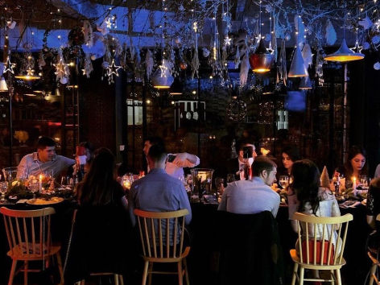
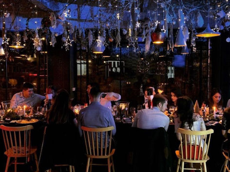
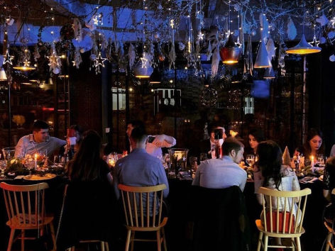
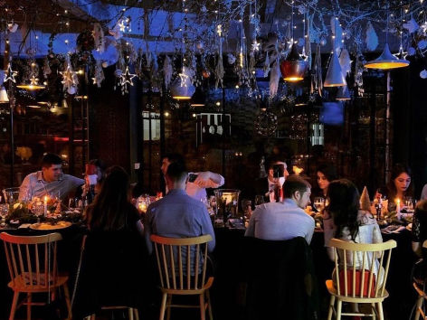

Locatia noastra
Ne aflam situati in zona centrala, usor accesibil, unde va punem la dispozitie peste 60 de locuri de parcare.
Capacitatea unitatii este de 240 de locuri, cu 60 de mese, intr-o ambianta placuta, intima si de bun gust.
Adresa noastra este Calea Victoriei, Bucuresti.
tel : 0700.000.000
Ne gasiti pe harta aici :
 
